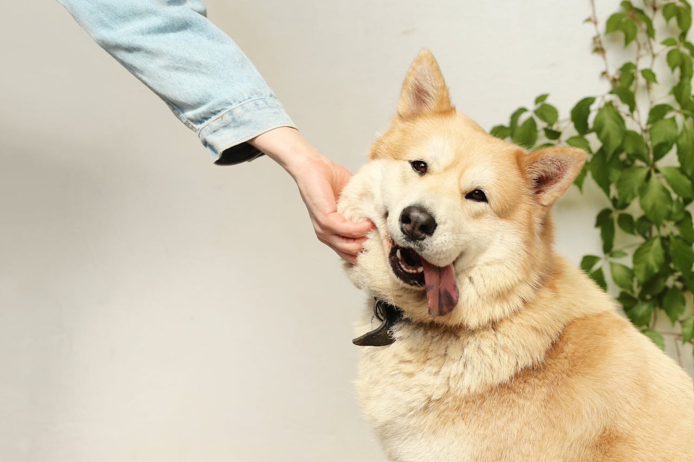

Descending from the wolf, dogs are often known as "man's best friend". These lovable animals are loyal to the end, just as they've been since the first ever domesticated dog. The domestic dog we know today has evolved over time ever since humans took in wolves to raise as companions. Dogs love to play games and spend time with their owners, and this is seen in their loyalty to those who take care of them. With enough love and care, a canine companion can turn into a lifelong friend.
Evolving from the older wildcats, cats are lovable pets that have a knack for sleeping and getting affection. While not as big as most dogs, recent studies have shown that cats can bring just as much happiness to their owners if given proper care and affection. Just like dogs, cats have also been prominent in human history, even playing the role of divine figures in some older civilizations. In our modern day, these felines have developed as sense of love for their humans, even if they still act like our bosses.
It's no secret that pets can make us happy, but did you know that cats and dogs can help us out in multiple different ways? For example, multiple studies show that owning and playing with your pets can ease away stress through the chemical "oxytocin". This chemical is often known as the love chemical, and it can create a parent-child relationship between owner and pet. This isn't the only benefit pets have in our lives. In fact, pets can support people in their lives, and even save them! Click here to learn more about how pets help us
Service animals are animals that are trained to assist, or even protect people in their daily lives. Assistance includes: helping a blind person navigate, alerting someone who has an allergy if the allergen is getting close, and even provide therapy by simply being within the presence of the person who needs it. The most commonly seen support animal is a dog, and this is due to their nature and strong connections to humans. These animals can often be seen wearing some sort of vest. This is to let others know that it is not ok to interact with the animal, as they to focus on helping their owner. Training service animals can take quite a while, but in the end they'll be happy to help their humans. Click here to learn more about service animals
© 2024 Cats and Dogs